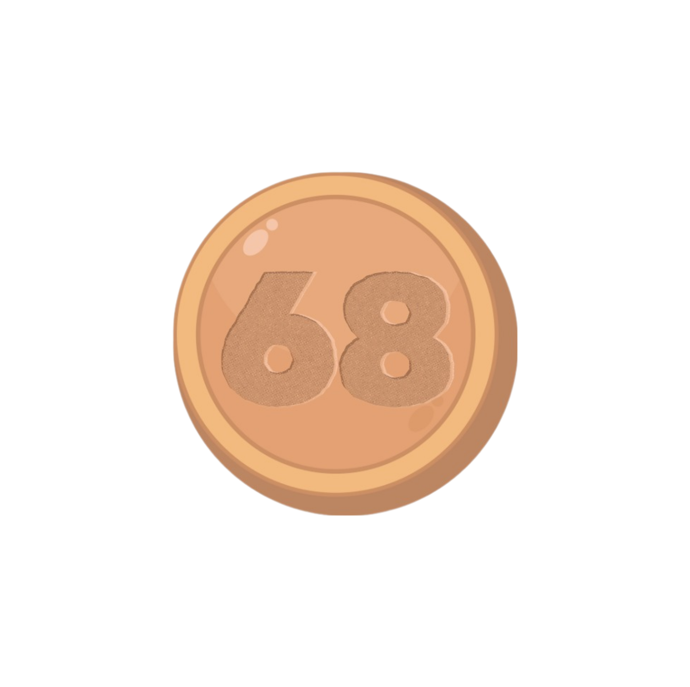
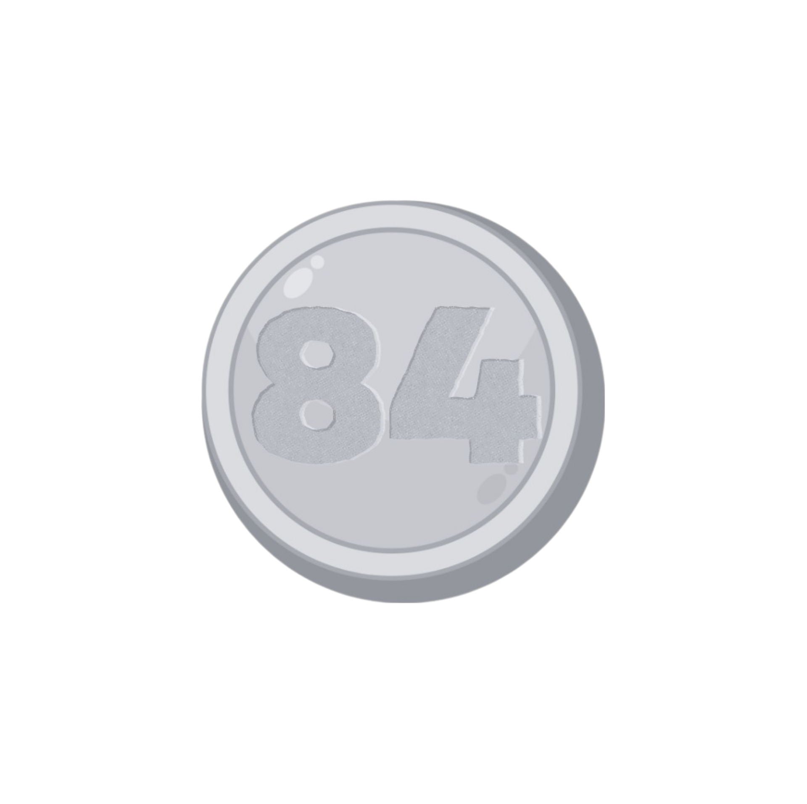
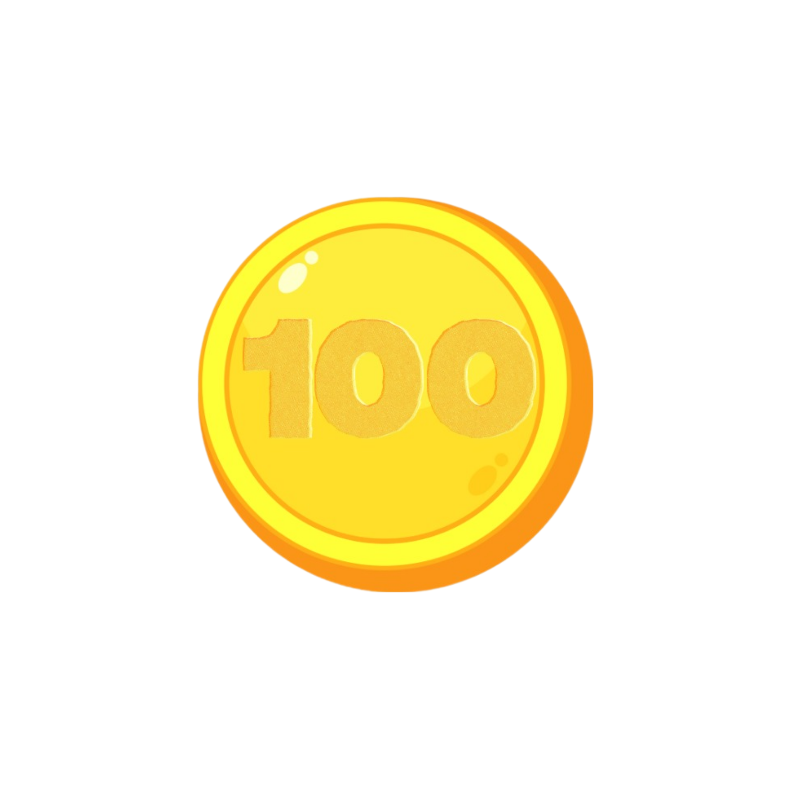
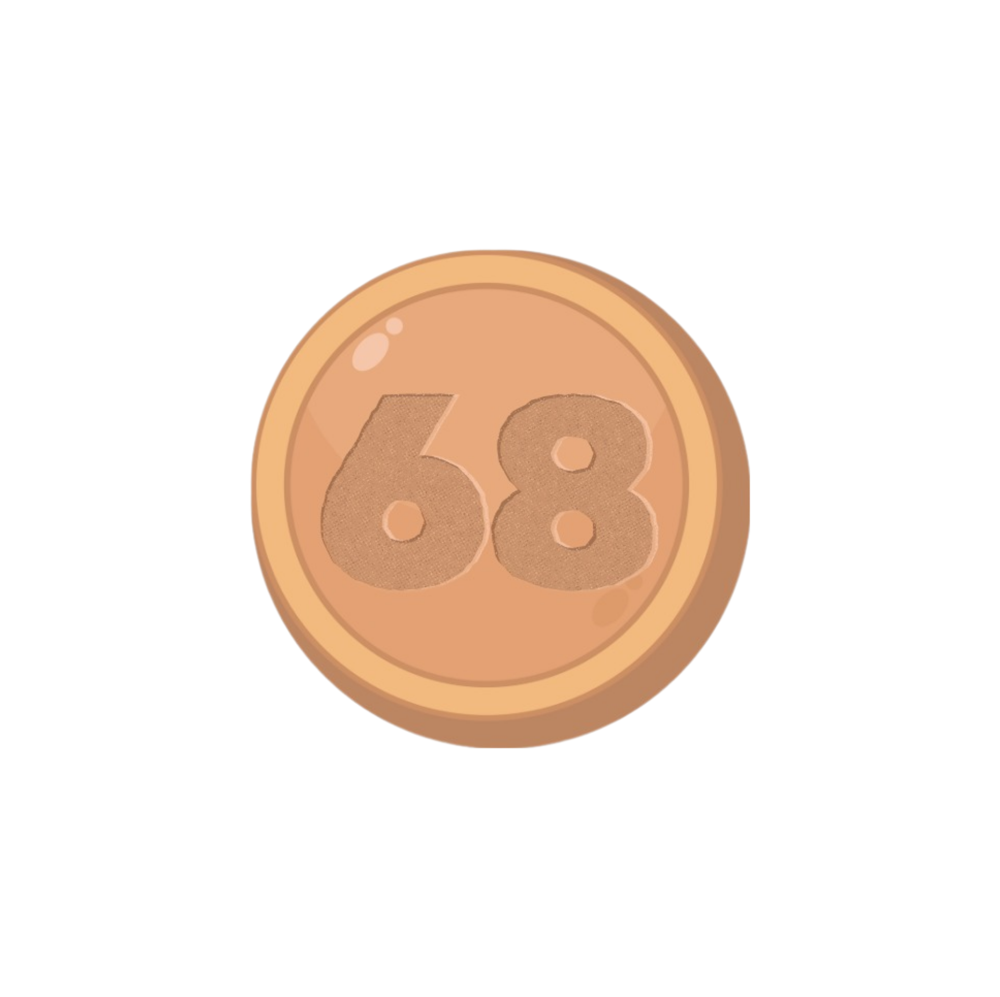
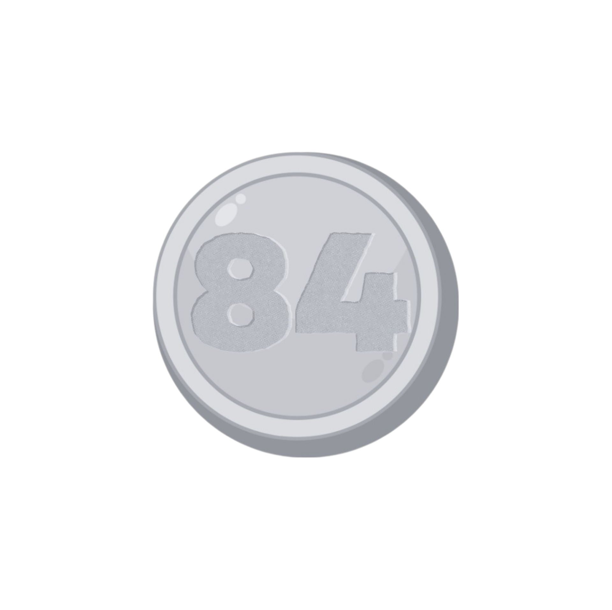
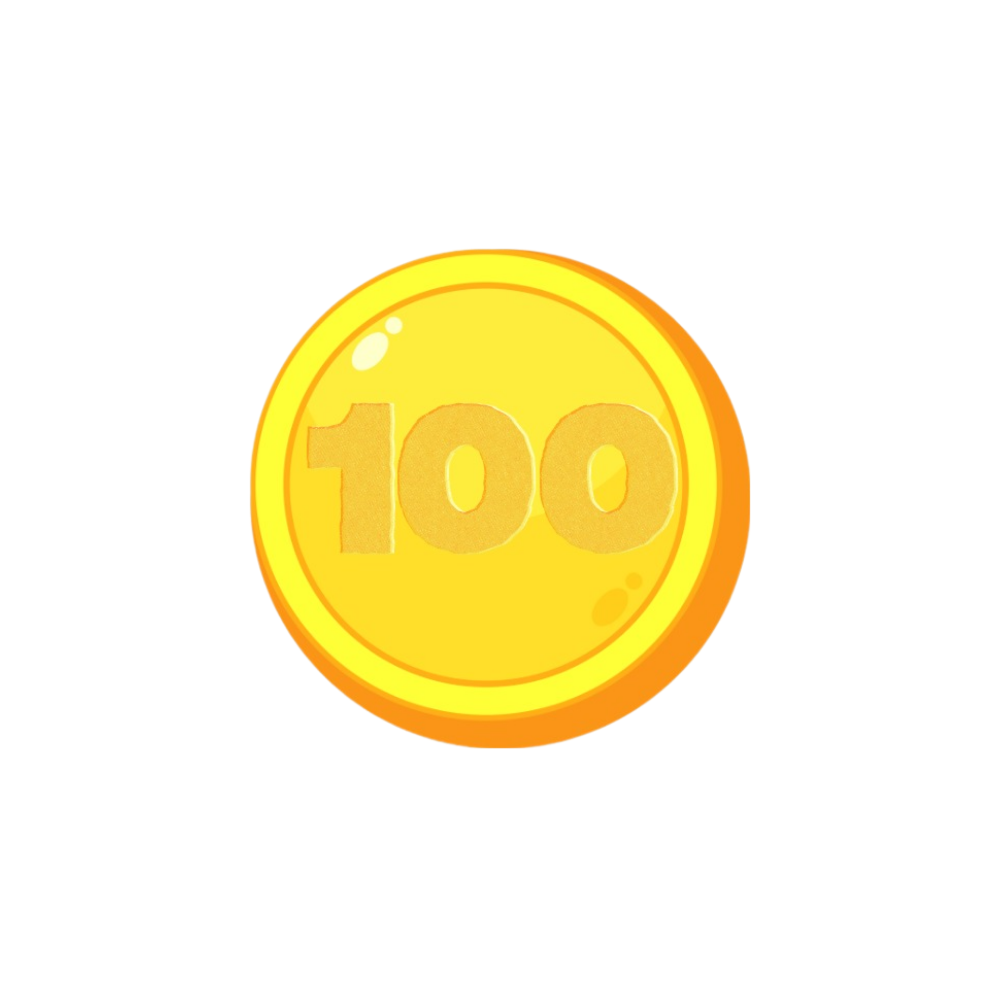

PILARES es un proyecto mediante el cual se buscamo disminuir violencias y desigualdades. La política está enfocada principalmente en la atención de las zonas con menor Índice de Desarrollo Social. Cualquier persona puede iniciar o continuar sus estudios -desde alfabetización hasta licenciatura-, así como acceder a talleres deportivos, culturales y de capacitación en oficios para la producción, comercialización y emprendimiento que permitan lograr la autonomía económica. Todas las actividades son gratuitas. .
Ingresa tu nombre de usuario
 




